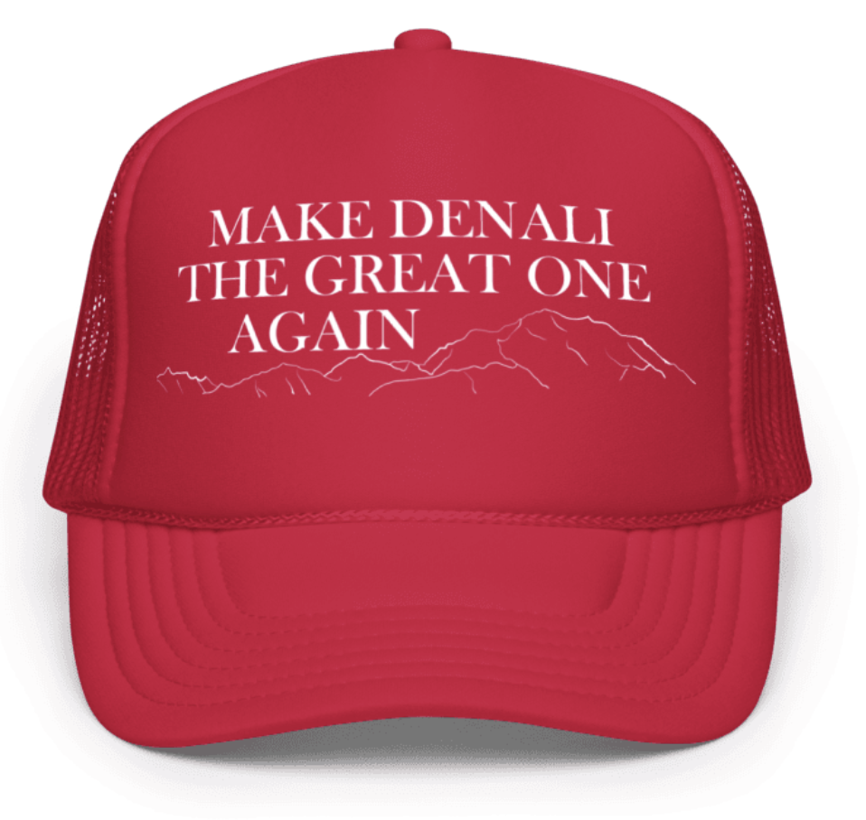

One of Trump's first executive actions after returning to office was to change the name of Denali
to Mount McKinley, part of his culture war on "woke ideology."
This was literally peak ignorance—denying history, Native heritage, and the
will of Alaskans across the political spectrum.[1]
Since time immemorial, the mountain bore its Athabaskan name, Denali, often transalted as The Great One.
The name remained until 1896 when a wealthy Seattleite arbitrarily slapped "McKinley"
on it, naming it after his preferred presidential candidate who never once set foot in Alaska.
In 2015, after decades of bipartisan effort, the mountain's name was rightfully restored to Denali.
Trump's willful ignorance denies the deep history of Alaska Natives in their homeland, and he's just another
rich white man from the Lower 48 pushing irrelevant politics on this icon of the North.
Let's Make Denali The Great One Again!
Show Your Support For The Great One
During his 1896 misadventure in the Susitna basin, William Dickey wrote off the Dena'ina people's name for the mountain as simply "their word for anything very large."[2] We don't have to accept this denial of Alaska Natives' knowledge of the land they've always called home. Restore the mountain's rightful name and Make Denali The Great One Again!
Trucker Hat - $20
Bumper Sticker - $5